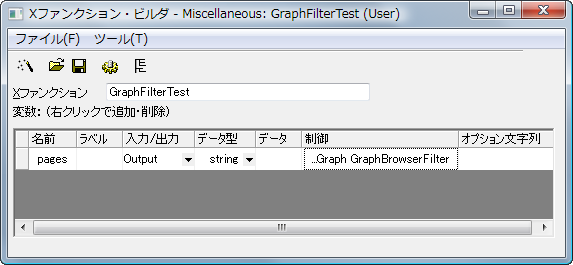
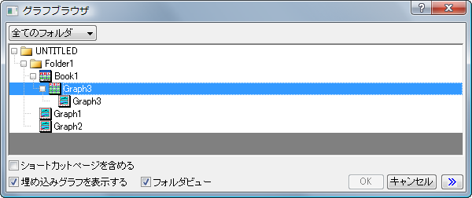
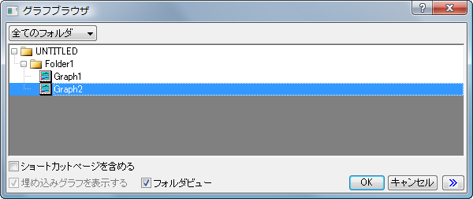

グラフブラウザダイアログをXファンクションで開く
Xファンクション, グラフブラウザダイアログを作成する
サマリー
このサンプルでは、XファンクションのGetNダイアログでグラフを指定するグラフブラウザダイアログを開くボタンを追加します。そして、フィルタ関数でグラフブラウザダイアログをカスタマイズする方法を示します。
学習する項目
- Xファンクションダイアログでグラフブラウザを開くボタンを追加する方法
- フィルタ関数でグラフブラウザダイアログをカスタマイズする方法
ステップ
次の3つのステップは、Xファンクションダイアログで、フィルタ関数を使用しないでグラフブラウザダイアログを開くボタンを追加する方法を示します。これは、最も簡単な処理で、グラフブラウザのすべての設定がデフォルトにセットされます。
- ツール：Xファンクションビルをメニューから選択します。次のように、Xファンクション GraphFilterTest を作成します。

制御文字列は「...Graph GraphBrowserFilter」です。
- コードビルダボタンをクリックしてコードビルダに移動し、メイン関数 GraphFilterTestでout_str(pages); を入力します。コンパイルボタンをクリックし、ダイアログに戻るをクリックします。
- OXFファイルを保存するボタンをクリックして保存します。コマンドウィンドウで「GraphFilterTest -d」を実行し、ダイアログが表示されたら、 参照ボタンをクリックします。そこでグラフを選択し、OKをクリックしてダイアログを閉じます。選択したグラフウィンドウの名前は、コマンドウィンドウに出力されます。
- グラフブラウザダイアログをカスタマイズしたくない場合、以下を続ける必要はありません。以下のステップは、例えばデフォルトビューモードをツリービューにセットするなど、すべてグラフブラウザダイアログをカスタマイズする方法です。MyGraphFilter.cを作成し、<Origin インストールフォルダ>\OriginC\OriginLabに保存します。※Windows Vista/7/8をご利用の方はOriginを「管理者として実行」してからこのファイルを保存してください。ソースファイルは以下のコードを含みます。
#include <..\Originlab\GraphFilter.h> // Originの組み込みファイル
int GraphBrowserFilter(int nMsg, Page& pg = NULL)
{
switch(nMsg)
{
case GBFM_IS_USE_PAGE: // Trueに対して1を返す
if(!pg)
return -1;
// 複数レイヤを含むフィルタページ
return pg.Layers.Count() > 1?0 : 1;
case GBFM_SHOW_EMBED_PAGE_CHKBOX:
// GraphFilter.hの別のオプションを参照
return EMBED_CHECKBOX_ENABLE;
case GBFM_SHOW_SWITCH_MODE:
// GraphFilter.hの別のオプションを参照
return VIEW_MODE_BOTH_WITH_TREE_DEFAULT;
case GBFM_SORT_PAGES:
return 1; // 0 または1を返す
}
return -1; // エラー
}
- MyGraphFilter.hを作成し、<Origin インストールフォルダ>\OriginC\OriginLabに保存します。
- XファンクションビルダでGraphFilterTest Xファンクションを開き、コードビルダボタンをクリックし、上記で新しく作成したヘッダファイルを含めます。MyGraphFilter.c および MyGraphFilter.h は、別のフォルダに配置できますが、それぞれが同じフォルダ内に存在する必要があります。それらが別のフォルダにある場合、次のようにヘッダファイルをインクルードするのに絶対パスを使用する必要があります。
//Case 1. ヘッダファイルがOriginC\Originlab\ フォルダにある場合
//追加のインクルードファイルをここに記述
#include <..\Originlab\MyGraphFilter.h>
//Case 2. ヘッダファイルがOriginC\Originlab\ フォルダにない場合
//追加のインクルードファイルをここに記述
#include "D:\MyFolder\MyGraphFilter.h"
- コマンドウィンドウで、「GraphFilterTest -d 」を実行し、GraphFilterTestダイアログで参照ボタンをクリックします。埋め込みグラフを表示チェックボックスが有効で、選択されていることが分かります。そして、埋め込みグラフがツリービューに一覧表示されます。

- コードビルダで、<Origin インストールフォルダ>\OriginC\OriginLabからMyGraphFilter.cを開きます。GBFM_SHOW_EMBED_PAGE_CHKBOXに対して、戻り値を「EMBED_CHECKBOX_ENABLE」から「EMBED_CHECKBOX_DISABLE_EMBEDDING_PAGE_NEVER_ENABLE」に変更します。コンパイルボタンをクリックしてMyGraphFilter.cをコンパイルします。コマンドウィンドウで「GraphFilterTest -d 」を再度実行します。埋め込みグラフを表示チェックボックスが無効になり、グレーアウトされていることが分かります。そして、埋め込みグラフがツリービューに表示されません。

- MyGraphFilter.cの他の場合に対しても、戻り値として <Originインストールフォルダ>\OriginC\Originlab\MyGraphFilter.h の他の値を使うことができます。それぞれを変更したら、忘れずにMyGraphFilter.cをコンパイルしてください。
- グラフブラウザを含む組込みのXファンクション(インポートとエクスポートのXファンクション expGraph等) も同じ方法でカスタマイズすることができます。